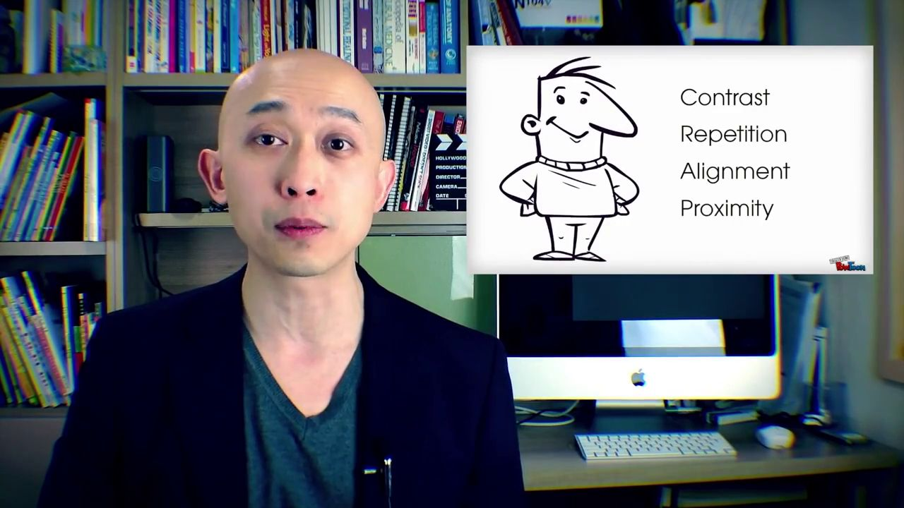

附件四：逐条看第三问
点击证据跳到原视频的估计时间。贡献是模型扰动结果，不是因果权重；音视频特征行对应的秒数需人工核对。附件四无标签，无法计算准确率。
01 · neutral · 强度 +0.23
三类概率：负 0.118 / 中 0.574 / 正 0.309；主要参考：text
有效位置：文本 22，音频 22，视觉 22（上限 50，填充不计）
Replacing these wear components when replacing the timing belt is essential to ensuring the new belt performs to its mileage requirements
模态贡献（对当前预测类别，带符号）
文本 +0.209
音频 +0.058
视觉 +0.087
候选证据，点击跳到原视频
text wear components when · 1.22–2.10s · 概率下降 +0.050 · ctc_reconstructed
text belt is essential · 3.04–4.26s · 概率下降 +0.033 · ctc_reconstructed
audio its mileage requirements · 7.04–8.27s · 概率下降 +0.030 · ctc_reconstructed
audio essential to ensuring · 3.78–5.02s · 概率下降 +0.016 · ctc_reconstructed
vision essential to ensuring · 3.78–5.02s · 概率下降 +0.017 · ctc_reconstructed
vision Replacing these wear · 0.50–1.40s · 概率下降 +0.017 · ctc_reconstructed
02 · neutral · 强度 -0.04
三类概率：负 0.354 / 中 0.389 / 正 0.256；主要参考：vision
有效位置：文本 19，音频 19，视觉 19（上限 50，填充不计）
We want to live by each other’s happiness - not by each other’s misery.
模态贡献（对当前预测类别，带符号）
文本 -0.087
音频 +0.115
视觉 +0.123
候选证据，点击跳到原视频
text We want to · 0.48–0.78s · 概率下降 +0.034 · ctc_reconstructed
text not by each · 1.82–2.21s · 概率下降 +0.020 · ctc_reconstructed
audio each other’s misery. · 2.11–2.77s · 概率下降 +0.034 · ctc_reconstructed
audio by each other’s · 0.98–1.42s · 概率下降 +0.022 · ctc_reconstructed
vision each other’s misery. · 2.11–2.77s · 概率下降 +0.034 · ctc_reconstructed
vision other’s happiness - · 时间待核 · 概率下降 +0.026 · low_confidence_or_unmapped
03 · negative · 强度 -0.26
三类概率：负 0.517 / 中 0.353 / 正 0.129；主要参考：text
有效位置：文本 33，音频 33，视觉 33（上限 50，填充不计）
There's one lender at the moment which I think is just Bankwest who don't take rental income into account, they take rental yield into account.
模态贡献（对当前预测类别，带符号）
文本 +0.526
音频 -0.013
视觉 -0.056
候选证据，点击跳到原视频
text who don't take · 4.11–4.99s · 概率下降 +0.127 · ctc_reconstructed
text income into account, · 5.49–6.54s · 概率下降 +0.063 · ctc_reconstructed
audio into account, they · 5.91–6.98s · 概率下降 +0.007 · ctc_reconstructed
audio into account. · 8.48–9.02s · 概率下降 +0.001 · ctc_reconstructed
04 · negative · 强度 -0.28
三类概率：负 0.654 / 中 0.136 / 正 0.211；主要参考：text
有效位置：文本 26，音频 26，视觉 26（上限 50，填充不计）
If I blow it at the team exercise, should I kiss my chances of cheering "GO BLUE" goodbye?] Absolutely not.
模态贡献（对当前预测类别，带符号）
文本 +0.715
音频 -0.044
视觉 -0.080
候选证据，点击跳到原视频
text goodbye?] Absolutely not. · 4.48–6.25s · 概率下降 +0.351 · ctc_reconstructed
text should I kiss · 2.18–2.66s · 概率下降 +0.074 · ctc_reconstructed
audio team exercise, should · 1.28–2.34s · 概率下降 +0.002 · ctc_reconstructed
05 · positive · 强度 +0.41
三类概率：负 0.044 / 中 0.339 / 正 0.618；主要参考：vision
有效位置：文本 15，音频 15，视觉 15（上限 50，填充不计）
Hi, my name is Chloe, video marketer for Red Wagon Marketing.
模态贡献（对当前预测类别，带符号）
文本 -0.051
音频 -0.097
视觉 +0.056
候选证据，点击跳到原视频
text my name is · 1.96–2.37s · 概率下降 +0.030 · ctc_reconstructed
vision Hi, my name · 1.26–2.25s · 概率下降 +0.045 · ctc_reconstructed
vision is Chloe, video · 2.31–3.53s · 概率下降 +0.042 · ctc_reconstructed
06 · positive · 强度 +0.74
三类概率：负 0.082 / 中 0.349 / 正 0.569；主要参考：text
有效位置：文本 35，音频 35，视觉 35（上限 50，填充不计）
If you're a fan of dancing in that sense, just like to watch people dance, see impressive dance moves then you might want to check out this movie solely for that
模态贡献（对当前预测类别，带符号）
文本 +0.135
音频 -0.113
视觉 -0.192
候选证据，点击跳到原视频
text dance, see impressive · 3.23–4.41s · 概率下降 +0.043 · ctc_reconstructed
text you're a fan · 时间待核 · 概率下降 +0.027 · low_confidence_or_unmapped
07 · positive · 强度 +0.71
三类概率：负 0.028 / 中 0.232 / 正 0.739；主要参考：text
有效位置：文本 48，音频 48，视觉 48（上限 50，填充不计）
As Linn’s associate editor Michael Baadke reports in our November 28 issue, attendees “enthusiastically discussed the topics of growing the hobby, the future of stamp shows, and dealers and philatelic partnerships, along with ways the leading organizations involved in the stamp hobby can work together to make it succeed and grow
模态贡献（对当前预测类别，带符号）
文本 +0.114
音频 -0.058
视觉 -0.041
候选证据，点击跳到原视频
text attendees “enthusiastically discussed · 5.00–7.56s · 概率下降 +0.061 · ctc_reconstructed
text growing the hobby, · 8.82–9.56s · 概率下降 +0.015 · ctc_reconstructed
audio discussed the topics · 7.10–8.14s · 概率下降 +0.003 · ctc_reconstructed
vision dealers and philatelic · 11.76–12.82s · 概率下降 +0.002 · ctc_reconstructed
vision partnerships, along with · 12.90–14.44s · 概率下降 +0.000 · ctc_reconstructed
08 · positive · 强度 +0.32
三类概率：负 0.062 / 中 0.393 / 正 0.546；主要参考：text
有效位置：文本 11，音频 11，视觉 11（上限 50，填充不计）
That brings us to tonight, the Universal Design Grand Challenge
模态贡献（对当前预测类别，带符号）
文本 +0.193
音频 -0.156
视觉 -0.177
候选证据，点击跳到原视频
text Universal Design Grand · 2.04–3.69s · 概率下降 +0.064 · ctc_reconstructed
text That brings us · 0.64–1.20s · 概率下降 +0.057 · ctc_reconstructed
09 · negative · 强度 -1.89
三类概率：负 0.938 / 中 0.034 / 正 0.028；主要参考：text
有效位置：文本 18，音频 18，视觉 18（上限 50，填充不计）
(uhh) I did not like this movie at all, I would not recommend it
模态贡献（对当前预测类别，带符号）
文本 +0.897
音频 -0.008
视觉 -0.011
候选证据，点击跳到原视频
text (uhh) I did · 0.48–1.33s · 概率下降 +0.062 · ctc_reconstructed
text not like this · 1.37–1.75s · 概率下降 +0.039 · ctc_reconstructed
audio recommend it · 3.22–4.36s · 概率下降 +0.000 · ctc_reconstructed
10 · negative · 强度 -1.60
三类概率：负 0.890 / 中 0.047 / 正 0.063；主要参考：text
有效位置：文本 30，音频 30，视觉 30（上限 50，填充不计）
(umm) And you know I really do like to see fluffy chick flicks sometimes so I'm not against that but this one was pretty terrible
模态贡献（对当前预测类别，带符号）
文本 +0.861
音频 -0.016
视觉 -0.016
候选证据，点击跳到原视频
text was pretty terrible · 7.51–9.21s · 概率下降 +0.141 · ctc_reconstructed
text but this one · 6.75–7.43s · 概率下降 +0.040 · ctc_reconstructed
audio flicks sometimes so · 3.91–5.13s · 概率下降 +0.001 · ctc_reconstructed
11 · negative · 强度 -0.88
三类概率：负 0.873 / 中 0.074 / 正 0.053；主要参考：text
有效位置：文本 14，音频 14，视觉 14（上限 50，填充不计）
I would be ashamed to have made this film if I was a director
模态贡献（对当前预测类别，带符号）
文本 +0.799
音频 +0.012
视觉 +0.001
候选证据，点击跳到原视频
text would be ashamed · 0.62–1.34s · 概率下降 +0.377 · ctc_reconstructed
text to have made · 3.23–3.69s · 概率下降 +0.052 · ctc_reconstructed
audio I was a · 4.55–4.80s · 概率下降 +0.001 · ctc_reconstructed
12 · negative · 强度 -1.03
三类概率：负 0.815 / 中 0.134 / 正 0.051；主要参考：text
有效位置：文本 42，音频 42，视觉 42（上限 50，填充不计）
Or worse, an individual previously had good credit, but usually by no fault of their own, or perhaps by fault of their own, they have let their credit sag, and credit scores is very low.
模态贡献（对当前预测类别，带符号）
文本 +0.788
音频 -0.019
视觉 -0.013
候选证据，点击跳到原视频
text is very low. · 11.63–12.27s · 概率下降 +0.053 · ctc_reconstructed
text credit sag, and · 9.49–10.75s · 概率下降 +0.042 · ctc_reconstructed
13 · neutral · 强度 +0.08
三类概率：负 0.087 / 中 0.583 / 正 0.330；主要参考：text
有效位置：文本 30，音频 30，视觉 0（上限 50，填充不计）
For example, I could take a set of data and from that data, I can find a relationship between any two of the given factors or more.
模态贡献（对当前预测类别，带符号）
文本 +0.199
音频 +0.087
视觉 +0.000
候选证据，点击跳到原视频
text For example, I · 0.00–0.90s · 概率下降 +0.037 · ctc_reconstructed
text a relationship between · 时间待核 · 概率下降 +0.024 · low_confidence_or_unmapped
audio that data, I · 时间待核 · 概率下降 +0.023 · low_confidence_or_unmapped
audio factors or more. · 7.30–8.62s · 概率下降 +0.022 · ctc_reconstructed
14 · neutral · 强度 +0.09
三类概率：负 0.090 / 中 0.502 / 正 0.408；主要参考：text
有效位置：文本 35，音频 35，视觉 35（上限 50，填充不计）
He is the co-founder of Rossen and Vettese Limited and the former Executive Director of Uniform Final Examination (UFE) courses at Toronto's York University.
模态贡献（对当前预测类别，带符号）
文本 +0.327
音频 +0.051
视觉 -0.077
候选证据，点击跳到原视频
text Rossen and Vettese · 1.58–2.46s · 概率下降 +0.073 · ctc_reconstructed
text is the co-founder · 0.60–1.32s · 概率下降 +0.050 · ctc_reconstructed
audio (UFE) courses at · 6.64–8.33s · 概率下降 +0.027 · ctc_reconstructed
audio Toronto's York University. · 8.39–9.61s · 概率下降 +0.022 · ctc_reconstructed
15 · positive · 强度 +1.04
三类概率：负 0.017 / 中 0.097 / 正 0.886；主要参考：text
有效位置：文本 21，音频 21，视觉 21（上限 50，填充不计）
However, despite their poverty, the family prioritize education because they believed in its power to transform lives
模态贡献（对当前预测类别，带符号）
文本 +0.198
音频 +0.026
视觉 -0.053
候选证据，点击跳到原视频
text power to transform · 时间待核 · 概率下降 +0.036 · low_confidence_or_unmapped
text believed in its · 4.57–5.45s · 概率下降 +0.015 · ctc_reconstructed
audio However, despite their · 0.08–1.58s · 概率下降 +0.008 · ctc_reconstructed
audio power to transform · 时间待核 · 概率下降 +0.007 · low_confidence_or_unmapped
vision lives · 7.03–7.29s · 概率下降 +0.002 · ctc_reconstructed
16 · negative · 强度 -2.18
三类概率：负 0.970 / 中 0.019 / 正 0.011；主要参考：text
有效位置：文本 11，音频 11，视觉 11（上限 50，填充不计）
It's a terrible, this is a terrible movie
模态贡献（对当前预测类别，带符号）
文本 +0.913
音频 -0.002
视觉 -0.000
候选证据，点击跳到原视频
text It's a terrible, · 0.48–1.19s · 概率下降 +0.051 · ctc_reconstructed
text is a terrible · 1.61–2.18s · 概率下降 +0.024 · ctc_reconstructed
audio a terrible movie · 1.73–2.52s · 概率下降 +0.002 · ctc_reconstructed
17 · positive · 强度 +1.40
三类概率：负 0.014 / 中 0.064 / 正 0.922；主要参考：text
有效位置：文本 24，音频 24，视觉 24（上限 50，填充不计）
Applying these four design concepts to your presentations is simple, easy and will make people think you turned into a design guru.
模态贡献（对当前预测类别，带符号）
文本 +0.311
音频 -0.074
视觉 -0.031
候选证据，点击跳到原视频
text easy and will · 5.65–6.96s · 概率下降 +0.021 · ctc_reconstructed
text presentations is simple, · 3.13–5.11s · 概率下降 +0.013 · ctc_reconstructed
vision concepts to your · 2.23–3.09s · 概率下降 +0.001 · ctc_reconstructed

18 · negative · 强度 -0.47
三类概率：负 0.458 / 中 0.430 / 正 0.112；主要参考：text
有效位置：文本 48，音频 48，视觉 48（上限 50，填充不计）
-And in Denmark - the first Baltic Cod fishery has been MSC – certified -Meanwhile, the Faeroese Mackerel Fishery has been denied MSC certification based on the fact that the fishery has failed to reach an agreement on mackerel quotas with Norway and the European Union.
模态贡献（对当前预测类别，带符号）
文本 +0.431
音频 +0.006
视觉 -0.043
候选证据，点击跳到原视频
text has been denied · 8.69–9.43s · 概率下降 +0.113 · ctc_reconstructed
text has failed to · 12.59–13.19s · 概率下降 +0.056 · ctc_reconstructed
audio Mackerel Fishery has · 7.83–8.77s · 概率下降 +0.011 · ctc_reconstructed
audio on mackerel · 14.69–15.21s · 概率下降 +0.006 · ctc_reconstructed
19 · negative · 强度 +0.13
三类概率：负 0.458 / 中 0.111 / 正 0.431；主要参考：text
有效位置：文本 39，音频 39，视觉 39（上限 50，填充不计）
People are surprisingly forgiving brands when they own up to mistakes, and unfortunately some haters out there love to point fingers and jump all over imperfections, but for the most part, people understand
模态贡献（对当前预测类别，带符号）
文本 +0.468
音频 -0.006
视觉 -0.061
候选证据，点击跳到原视频
text all over imperfections, · 9.53–10.71s · 概率下降 +0.105 · ctc_reconstructed
text up to mistakes, · 3.60–4.40s · 概率下降 +0.104 · ctc_reconstructed
audio the most part, · 11.49–12.01s · 概率下降 +0.013 · ctc_reconstructed
audio some haters out · 6.14–6.93s · 概率下降 +0.011 · ctc_reconstructed
20 · positive · 强度 +0.97
三类概率：负 0.024 / 中 0.108 / 正 0.868；主要参考：text
有效位置：文本 43，音频 43，视觉 43（上限 50，填充不计）
And of course, click in the link of the description of this video for more, and we'll have more live updates and a stock market video (wrap-up) at the end of the day today.
模态贡献（对当前预测类别，带符号）
文本 +0.125
音频 -0.016
视觉 +0.018
候选证据，点击跳到原视频
text more, and we'll · 3.54–4.88s · 概率下降 +0.023 · ctc_reconstructed
text of course, click · 0.70–1.38s · 概率下降 +0.015 · ctc_reconstructed
audio end of the · 9.05–9.29s · 概率下降 +0.002 · ctc_reconstructed
audio day today. · 9.33–9.69s · 概率下降 +0.001 · ctc_reconstructed
vision more, and we'll · 3.54–4.88s · 概率下降 +0.010 · ctc_reconstructed
vision of this video · 2.66–3.22s · 概率下降 +0.005 · ctc_reconstructed